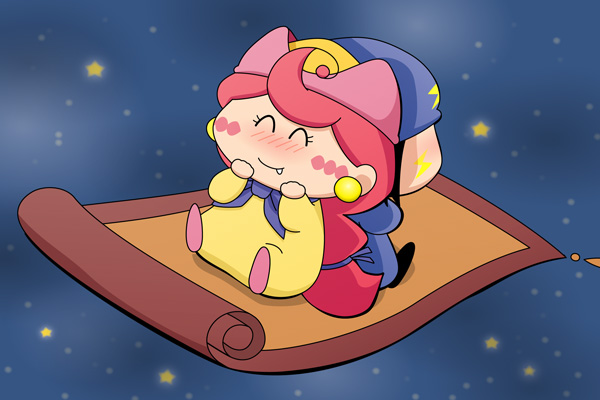

いよいよ２０１０年も終わりですね。来年の希望と期待を込めて、アクミとネズミを描いてみました。背景とかいろんな部分が手抜きですみません。。
アクミはいろんな表情をしますが、うれしくてドキドキしている時の表情が私は一番好きです(^^)。２０１１年もいろんな妖精カップリングの話題で盛り上がりたいですね。来年もムルモ屋本舗をどうぞよろしくお願いいたします！
絵のアクミさん、果たしてどんな風にしてネズミを自分の絨毯に誘い込んだのでしょうかね？ 私的には突然ネズミの元に現れて「乗りな！」と声をかけ、反抗するネズミを魔法で無理矢理乗せたという手荒な方法を想像…。その後はラットと組んでいた頃の話をしつつ、「なぁ、ネズミは２０１１年はどんな一年にするつもりなのか？」とかいろいろ聞いて欲しいです。ネズミは「アクミには関係のないことでござる」とか答えそうですが…。
(2010/12/30)